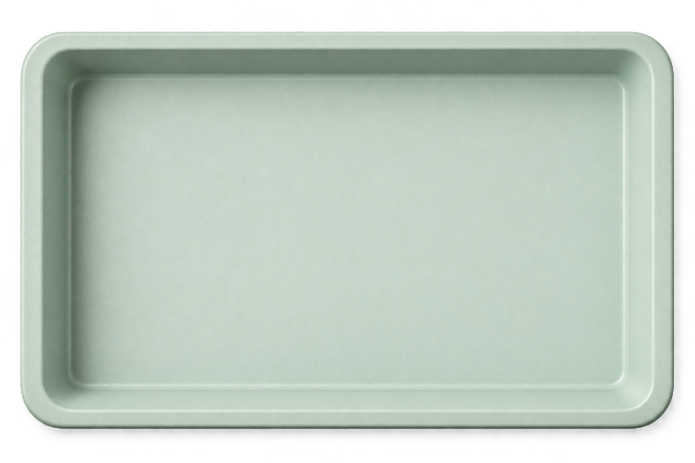

01 / FIELD RESEARCH
表达与接收之间Between speaking and hearing
双视角问卷 · 5 类沟通场景 · 344 份有效问卷Two questionnaire perspectives · five contexts · 344 valid responses
一位关系一般的同学，向你展示挑选了很久的衣服或球鞋。A classmate shows you clothes or shoes they spent a long time choosing.
问卷第 6 题 · 情境节选Questionnaire item 6 · adapted scenario“你自己觉得好看就好啊。”“As long as you think it looks good.”
此刻站在表达者一侧：你会怎样回应？一句话的意图，并不能替听者决定感受。From the speaker’s side: what would you say? Intention alone cannot determine how a response is received.
双视角问卷 · 5 类沟通场景 · 344 份有效问卷Two questionnaire perspectives · five contexts · 344 valid responses
《控方证人》与《阿甘正传》中的语言、权威与评价。Language, authority and evaluation in Witness for the Prosecution and Forrest Gump.
C3、C5 远期运费协议 · 便利收益与现货运价预测。C3 and C5 FFAs · Convenience yield and spot freight rate forecasting.
先注意颜色，再问自己为什么停下。First notice the colour. Then ask what made you stop.
个人摄影正在选片。这里先呈现色彩与装帧。Personal photographs are being selected. Explore the colour and book design for now.
先出片，再把它放到旁边。Let the print emerge, then settle beside the camera.
随笔、观影笔记，还有没有急着想明白的事。Essays, film notes, and questions I’m still sitting with.
a few things to keep.
我会为了一个镜头停下来，也会对一句话追问很久。喜欢故事带来的感动，也想知道它是怎样被讲出来的。I stop for a shot, and linger over a sentence. I like being moved by a story—and wondering how it was told.
吉林大学 · 汉语言文学，辅修法学
香港中文大学暑校 · Language and Society
研究、写作、编辑与品牌策划。Jilin University · Chinese Language and Literature; minor in Law
CUHK Summer School · Language and Society
Research, writing, editing and brand planning.
curious about
the little things.
喜欢的东西，也藏着我做事的线索。Things I love, and clues to the things I make.

点开一个物件，听听它背后的故事。Pick an object. There’s a story behind it.
从一句你好开始。It starts with hello.
A NOTE BETWEEN US · J/WContact九岁第一次翻开 Harry Potter，几乎一口气读完了整个系列。
十一岁以前，我一直认真地等着一只猫头鹰来敲我的窗户。现在已经上大学了，我仍然相信我的猫头鹰大概是迷路了。
喜欢 Harry Potter，最初是因为它让我第一次意识到：原来世界之外，还可以有另一个如此完整的世界存在。 Hogwarts、魔法、学院、幽灵、会动的楼梯……它们让我从很小的时候就开始喜欢 imagining worlds，也开始观察一个世界究竟是怎样被建立起来的。
而后来真正改变我的、塑造我的，是那些书中的角色。
Hermione 是我少女时期关于英雄主义最早的想象。聪明、努力、机智、果决——她曾经就是我想象中“长大后的自己”。而 Snape 则让我慢慢明白，一个人并不会简单地属于“好人”或“坏人”，真正有趣的人物总是矛盾、复杂，甚至很难被一句话定义。
但我一直记得 Harry Potter and the Prisoner of Azkaban 里湖边的那个瞬间。
Harry 一直以为，是父亲出现并救了自己。
后来他才发现，那个能够召唤出 Patronus 的人，从始至终都是他自己。
小时候看到这里，我第一次被一个很简单的念头击中：
有时候，你等了很久的人不会来。
因为最终能够救下你的那个人，就是你自己。
也许这就是为什么这么多年过去了，我仍然相信魔法。
当然，我也仍然在等我的猫头鹰。🦉
I first opened Harry Potter when I was nine, and read almost the entire series in one breath.
Until I was eleven, I genuinely waited for an owl to knock on my window. I’m at university now, and I still believe that my owl probably just got lost.
What first made me love Harry Potter was the way it made me realise, for the first time, that beyond this world, another one could exist in such complete detail. Hogwarts, magic, houses, ghosts, moving staircases… they made me fall in love with imagining worlds from a very young age, and with noticing how a world is built in the first place.
But what truly changed me, and shaped me, were the characters.
Hermione was my earliest idea of heroism as a girl. Intelligent, hardworking, quick-witted, decisive — she was once exactly who I imagined my future self would become. Snape, on the other hand, slowly taught me that people do not simply belong to the categories of “good” or “bad.” The most compelling characters are contradictory, complicated, and often impossible to define in a single sentence.
But there is one moment from Harry Potter and the Prisoner of Azkaban that has always stayed with me.
Harry believes that his father has appeared to save him.
Later, he realises that the person who was able to cast the Patronus had been himself all along.
When I read that as a child, I was struck for the first time by a very simple idea:
Sometimes, the person you have been waiting for will never come.
Because in the end, the person who can save you is yourself.
Maybe that is why, after all these years, I still believe in magic.
And yes, I am still waiting for my owl. 🦉
喜欢 Groundhog Day，并不是因为“时间循环”这个设定本身。
时间循环其实已经是一个很熟悉、甚至有些老套的故事框架了。但这部电影真正吸引我的地方，是它怎样利用 Phil 一次又一次经历同一天，让“重复”本身变成一种对照。
一开始，他试探规则，发现事情不会留下后果，于是开始放纵、取巧、利用循环。
后来，他却开始用这些重复的时间学习。
学钢琴，学冰雕，学修车，学 Heimlich manoeuvre；他知道什么时候会有孩子从树上掉下来，什么时候会有人需要帮助，甚至知道怎样在恰好的时间出现。
一天好像突然变得很长。
长到如果你拥有无数次机会，你几乎可以学会任何东西，也可以慢慢认识身边的每一个人。
如果是我，我大概也会先试探这个世界的规则。
然后，我想我会花很多时间去学习技能，也会每天选择一个不同的人坐下来聊天。问他们以前经历过什么，为什么会变成现在的样子，他们害怕什么，又在期待什么。
Observing people has always been fascinating to me.
但电影里最让我难受的，反而是 Phil 一次又一次试图救下那个 homeless man。
他已经知道了几乎所有事情什么时候会发生，也拥有无数次重新来过的机会，却依然救不了他。
那一刻我突然意识到：一天真的很短。
短到有些事情，无论你怎样努力，都无法在一天之内改变。
可一天又真的很长。
长到如果它能够不断重复，你可以学习很多东西，可以帮助很多人，也可以一次次尝试成为一个不同的自己。
而我最喜欢的，还是电影里那段很简单的酒馆对话。
Phil 问：“What would you do if you were stuck in one place, and every day was exactly the same, and nothing that you did mattered?”
对面的人只是回答：“That about sums it up for me.”
第一次看到这里，我有一种很强的“原来如此”的感觉。
因为现实里的我们当然没有被困在 February 2。
但仔细想想，我们的生活又有多少天，真的完全不同？
起床、上课、工作、吃饭、回到同一个房间，见相似的人，走相似的路。我们以为 Groundhog Day 讲的是一个非常荒诞的困境，可某种意义上，repetition is already part of ordinary life.
区别只是，Phil 能清楚地知道自己正在重复。
而我们往往不知道。
所以我越来越觉得，这部电影真正问的并不是：
“如果你被困在同一天，你会怎么办？”
而是：“如果生活本来就由大量相似的日子组成，你准备怎样度过它们？”
我很喜欢一句话：
如果每一天都一样，我至少希望自己不是一样的。
也许所谓 a life well lived，并不是拥有无穷无尽的新鲜事。
而是在那些看起来相似的日子里，仍然认真地学习、观察、认识别人、帮助别人，也一点一点成为一个不同的自己。
What I love about Groundhog Day is not the time-loop premise itself.
A time loop is already a familiar, even somewhat overused story framework. What draws me to this film is how it has Phil live the same day again and again, making repetition itself a way to reveal contrast.
At first, he tests the rules. Once he discovers that his actions leave no lasting consequences, he begins to indulge himself, take shortcuts, and exploit the loop.
Later, though, he starts using that repeated time to learn.
He learns piano, ice sculpting, car repairs, and the Heimlich manoeuvre. He knows when a child will fall from a tree, when someone will need help, and how to turn up at exactly the right moment.
Suddenly, a day seems very long.
Long enough that, given countless chances, you could learn almost anything and slowly get to know everyone around you.
If it were me, I would probably start by testing the rules of that world too.
Then I think I would spend a lot of time learning skills, and choose a different person each day to sit down and talk with. I would ask what they had been through, why they became who they are now, what they fear, and what they are hoping for.
Observing people has always been fascinating to me.
But the part of the film that hurts most is Phil trying, again and again, to save the homeless man.
He already knows when almost everything will happen. He has countless chances to try again. And yet he still cannot save him.
That was the moment I suddenly realised: A day really is so short.
So short that some things cannot be changed within a single day, no matter how hard you try.
And yet a day can also be so long.
Long enough that, if it keeps repeating, you can learn many things, help many people, and keep trying to become a different version of yourself.
My favourite moment, though, is still that simple conversation in the bar.
Phil asks: “What would you do if you were stuck in one place, and every day was exactly the same, and nothing that you did mattered?”
The man across from him simply replies: “That about sums it up for me.”
The first time I saw that scene, I had a strong sense of: “Oh. That’s it.”
Because of course, in real life, we are not trapped on February 2.
But if you think about it, how many of our days are actually completely different?
We wake up, go to class or work, eat, return to the same room, see similar people, and walk the same roads. We think Groundhog Day is about an absurd predicament, but in a way, repetition is already part of ordinary life.
The difference is that Phil knows he is repeating himself.
Most of us do not.
So the more I think about it, the more I feel that the film’s real question is not:
“What would you do if you were trapped in the same day?”
But rather: “If life is already made up of so many similar days, how do you want to spend them?”
There is one line I especially like:
If every day is the same, I at least hope I am not.
Maybe a life well lived is not about having an endless stream of new experiences.
Maybe it is about continuing to learn, observe, get to know people, help others, and slowly become someone different—even within days that look much the same.
第一次看 Inside No. 9 在大学课堂上。老师拿第一集 “Sardines” 给我们讲叙事。一个衣柜，一群人，几乎没有什么宏大的场景，却能让秘密一点一点从对话里浮出来。
我当时脑子里只有一个感觉：原来故事还可以这样讲。
后来到了期末周，我想找一部短一点的下饭剧。想到它一集三十分钟左右，特别合适。结果从“吃饭的时候随便看看”，到把几季全追完，又去看 The League of Gentlemen 和 Psychoville。
感慨 Steve Pemberton 和 Reece Shearsmith 真的是天才。
我喜欢 Inside No. 9 的 twist，但后来发现，我喜欢的远远不只是 twist。
三十分钟，一个房间，几个角色，他们却可以一次又一次重新发明讲故事的方法。“The 12 Days of Christine” 可以把十二年压缩进半小时；“3 by 3” 可以干脆伪装成一档真正的 quiz show；“Tom & Gerri” 让我直到最后仍在重新判断谁是真实、谁才是幻觉。
而真正沉淀下来以后，我反而越来越喜欢那些安静的部分。
像 “Bernie Clifton’s Dressing Room”，两个曾经的 comedy partners 在一间 dressing room 里重新面对彼此；或者 “Merrily, Merrily”，几个老朋友在湖面上重聚，争吵、回忆，再用一场烟花告别过去。它们特别故意地塑造或者烘托情感，却让我记了很久。
看得越多，我也越不像一个单纯的观众。我开始盯着镜头角落里的东西，猜角色名字有没有含义，留意 camera movement、props、dialogue，寻找那只每一集偷偷出现的 brass hare。
有时候我甚至会暂停、记录，再回头想：为什么这个故事成立？
后来我还去读了 The Insider’s Guide to Inside No. 9。看到他们怎样讨论道具、场景、剧本和一个个创意时，我反而更确定，我最喜欢他们的地方不是“聪明”。
而是 认真。
他们愿意为了一个只有几秒钟的细节花心思，愿意不断换形式、换类型、换规则，却依然认真地把每一个故事讲完整。
我想，也许这就是我最想从他们身上学到的东西：
Be experimental, but never careless.
做与别人不同的东西。
但不是为了显得不同。
而是因为你真的想找到一种更好的方式，把这个故事讲出来。
The first time I watched Inside No. 9 was in a university class. Our teacher used the first episode, “Sardines,” to talk about narrative. One wardrobe, a group of people, almost no grand setting at all—and yet secrets slowly surfaced through dialogue.
At the time, I had only one thought: So this is another way a story can be told.
Later, during finals, I wanted something short to watch over meals. Each episode was around thirty minutes, which felt perfect. What started as “something casual to watch while eating” turned into finishing several seasons, then moving on to The League of Gentlemen and Psychoville.
I could only think that Steve Pemberton and Reece Shearsmith are geniuses.
I love the twists in Inside No. 9, but over time I realised that twists are only a small part of what I love about it.
Thirty minutes. One room. A handful of characters. And somehow, they keep reinventing the way a story can be told. “The 12 Days of Christine” compresses twelve years into half an hour; “3 by 3” disguises itself as an actual quiz show; “Tom & Gerri” keeps making me question, right until the end, who is real and who might be an illusion.
But after everything had time to settle, I found myself increasingly drawn to the quieter moments.
In “Bernie Clifton’s Dressing Room,” two former comedy partners face each other again in a dressing room; in “Merrily, Merrily,” a group of old friends reunite on a lake, argue, remember, and finally say goodbye beneath a burst of fireworks. They deliberately build and heighten the emotion, yet those episodes stayed with me for a long time.
The more I watched, the less I felt like a passive viewer. I started staring at objects in the corners of the frame, wondering whether a character’s name carried some hidden meaning, paying attention to camera movement, props, dialogue, and the brass hare quietly hidden in every episode.
Sometimes I even pause, take notes, and come back to the same question: Why does this story work?
Later, I read The Insider’s Guide to Inside No. 9. Seeing how they discussed props, sets, scripts, and individual ideas made me even more certain that what I admire most about them is not simply how “clever” they are.
It is how seriously they care about the work.
They are willing to put thought into a detail that may appear for only a few seconds. They keep changing form, genre, and rules, while still taking the time to tell every story properly.
I think that may be the thing I most want to learn from them:
Be experimental, but never careless.
Make something different.
But not just for the sake of looking different.
Do it because you really want to find a better way to tell the story.
我喜欢等待拍立得慢慢显影的那几分钟。影像从空白里一点点浮现，也像把某个瞬间轻轻封存成一段带着颗粒感的旧回忆。
对我来说，拍照不只是记录。它更像是一种观察世界的方式——透过自己的视角，留意光线、街道、人，以及那些很容易被忽略的小事。
还有一台 Sony ZV-1。
它没有拍立得等待显影的仪式感，却陪我记录了另一段很不一样的生活。
想知道它的故事吗？
I love those few minutes spent waiting for an instant photograph to develop. As the image slowly emerges from a blank sheet, it feels as though a moment is gently being preserved as an old, grainy memory.
For me, photography is more than a record. It is a way of observing the world through my own eyes—paying attention to light, streets, people, and the little things that are so easily overlooked.
There is also a Sony ZV-1.
It may not have the ritual of waiting for an instant photograph to develop, but it helped me capture a very different chapter of my life.
Curious about its story?
一些被写下来的想法
我把日常里值得多看一眼的东西记下来。
关于人、生活、影像，也关于那些一时还想不明白的问题。
A few thoughts put into words
I write down the things in everyday life that deserve a second look.
About people, life, images—and the questions I have yet to make sense of.